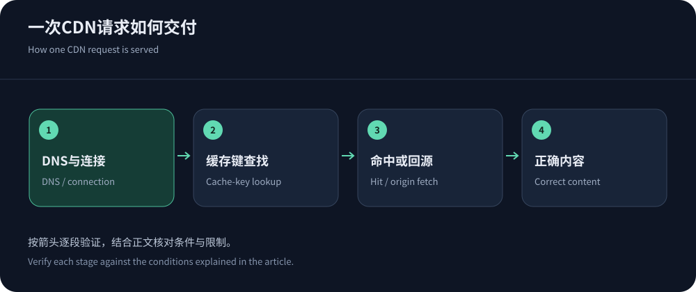
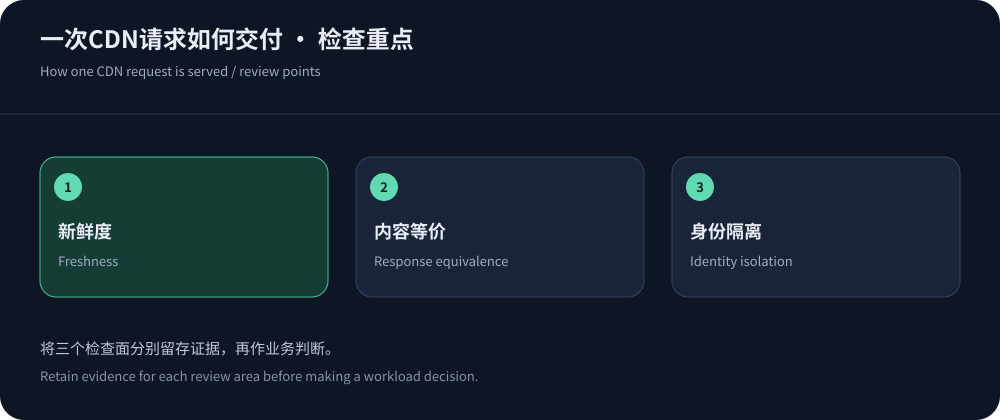

CDN加速是什么：把可复用的内容交付放到边缘
CDN是内容分发网络。用户请求网站资源时，可由分布式边缘节点处理；若边缘已有可用缓存，就能直接交付，否则按策略向源站获取。这样可能减少访问距离和源站重复工作，也可以在入口实施安全与协议优化。但动态交易、数据库处理和客户端渲染仍然存在，CDN不是让所有网站自动变快的开关。
理解CDN最简单的方法，是跟随一次图片请求。浏览器解析域名、建立连接并发送请求，边缘按缓存键查找对象，检查是否可用，再决定交付、验证或回源。配置影响的不只是速度，还包括内容是否新鲜、用户数据是否隔离和源站能否承受突发。后续选型可沿CDN购买指南展开。
一次请求为什么会命中或未命中
缓存键决定哪些请求可以使用同一份响应，可能涉及域名、路径、查询参数和特定请求头。新鲜度决定已有对象能否直接使用；过期对象有时可向源站验证，而不必重新传输完整内容。具体行为依赖响应指令和产品配置。RFC 9111是理解这些语义的基础，不能把“缓存所有”当成默认正确答案。
例如版本化脚本适合较长缓存，因为文件名随版本改变；账户页通常不应被不同用户共享。无关营销参数会分裂缓存，而影响语言、尺寸或授权的参数又不能随意删除。高命中率只有在内容正确时才有意义。开发者需要能解释某请求为什么命中，运营人员也需要知道更新内容后怎样使旧版本失效。


CDN能改善哪些成本
不同站点的收益不同，不能引用一个固定百分比来预测所有业务。下面按资源说明需要观察的变化，既包括用户体验，也包括源站工作量。测试应保留错误与内容校验，不应只展示更低的平均时间。
| 资源 | 可改善的部分 | 仍需处理 |
|---|---|---|
| 图片、脚本与样式 | 缓存交付减少重复回源，区域节点可能缩短下载路径。 | 文件体积、压缩、格式、页面依赖与版本更新仍需优化。 |
| 公开HTML | 适当缓存可减少重复渲染，提高突发访问时的承载余地。 | 控制新鲜度，区分登录态、语言与个性化内容。 |
| API与交易 | 连接复用、区域入口和安全控制可能改善访问及资源压力。 | 鉴权、数据库、幂等与单次执行成本仍由应用负责。 |
| 下载与视频 | 边缘分发可减少源站重复出网，支持适当的分段和缓存策略。 | 确认产品许可、鉴权、Range、媒体协议和带宽费用。 |
第一次接入，按依赖顺序完成配置
选择测试域名，确认源站地址、端口、协议和Host。配置浏览器到边缘与边缘到源站的TLS，避免只让外层显示安全而回源证书失效。建立最小缓存策略，公开资源与私有接口分开；再开启日志、健康检查和告警。完成这些准备后，按厂商要求调整DNS，不能在源站尚未验证时先全量切换。
Cloudflare缓存文档与CloudFront缓存键说明展示了相关配置维度。不同产品字段不完全相同，迁移时应理解语义而非逐字复制。验证匿名、登录、页面更新、错误响应和回调，确认通过CDN与预期内容一致。再逐步扩大范围，并保存旧配置。
浏览器缓存和CDN缓存，不是同一份副本
浏览器可能直接使用本地对象，这时请求甚至不会到达CDN；边缘失效也不必然清除用户已经保存的副本。设计更新策略时，应同时考虑浏览器新鲜度、边缘缓存和源站版本。版本化资源可以让新页面引用新地址，但旧资源仍需保留过渡。排查“为什么别人还是旧图”时，先确认请求是否真正发出，避免反复清理并未参与这次访问的边缘缓存。
常见故障：快了不等于配置正确
页面改了却不更新，可能是TTL、浏览器缓存或多层失效范围；登录用户看到别人的内容，可能是共享缓存边界错误，应立即停止相关缓存并调查影响；资源偶发失败，可能来自证书、回源Host、超时或源站限制。故障分析要关联浏览器、边缘和源站日志，不要把所有问题都归类为节点不稳定。
如果命中率很低，检查对象是否允许缓存、缓存键是否碎片化、是否被频繁清理。若命中很高但动态页面慢，检查应用和数据库。源站防火墙也要随可信代理地址维护，避免节点变化后误拦正常回源。每次调整保留版本与回退，尤其不要同时修改缓存键、证书和应用代码。
服务商怎么选：从应用要求反推
简单内容站可比较易用的全球缓存方案；现有云项目可优先评估与源站、权限和日志体系一致的产品；中文高防与区域需求可以优先询问CDN5。无论品牌，先确认协议、地区、缓存控制、安全、日志和支持，再谈最低价。官网功能只证明公开产品定位，实际套餐权限与业务效果仍需试点。
2026年10月14日可核实的CloudFront定价同时提供固定套餐和按量方式，说明CDN并非只有流量单价一种模式。总成本还可能包含回源、请求、安全与运维。费用详解见流量与带宽计费。免费方案可以降低试用门槛，但必须检查使用范围和限制。


如何判断接入真的有效
在相同资源和用户分组下比较接入前后，区分连接复用、协议、缓存状态与业务高峰。记录P50、P95、错误、内容校验和源站请求，不只展示一个最短时间。若用户页面完成更快、关键操作成功且源站压力下降，就有较清晰的收益证据；若只改变测速端点或删掉失败样本，结果无法用于采购。
长期监测还要覆盖新页面、应用升级和异常流量。缓存规则、证书和源站限制都可能随业务变化失效。CDN接入不是结束优化，而是增加了一层可控制的交付系统。把这层系统的行为解释清楚，团队才能在流量增长、内容更新和攻击事件中保持可恢复的运行状态。